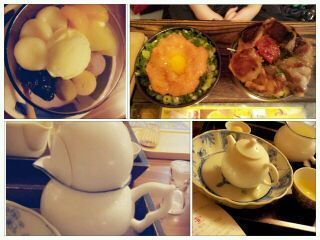

| 2012/10 05 Fri | ろってぃーfamの名前決定 致しましたぜっ(*・∀・*) ♪ |
ほっほーーい☆
皆様 こんにちわ。
ろってぃー♪です。
この前 地元 大阪で
あっちゃん(姉)と梅田へ
行った時に
撮った写メさんたちです♪
お昼 カフェに行って食べた
どんぶりとか
お茶専門のお店で
食べたデザート。
見て♪
すごくかわいいでしょ・ω・?

お茶の教室に来たみたいだった
*・ω・*
自分で 紙に書かれた
説明を読んで
お茶をつくってくの。
お店の人もすっごい
優しい人で
のんびりした時間を
過ごすことができました。

今は学校帰りです☆
そのままレッスンへ直行!!
今日もこれからまだまだ
頑張〜〜〜?
ろってぃーー★☆★!! 笑
あっ! ソーダソーダっ)))
ろってぃーfamの名前つけようよっ♪
ってなって、募集して
皆様のコメント,提案を
読ませて頂きました*^^*
本当に 皆様すごいですよねえ♪
おもろいこと考えるわぁ〜
まひろが全然
思いつかなかったこと
とかもあって
読んでて楽しかたー・∀・
そして決めましたっ!!
今日から皆様は ..........
★☆★☆
ろってぃーむ。
★☆★☆
だwwwww。
ろってぃーと teamを
かけてんだよねっ*^ω^*
『ろってぃ〜む。』かわいい。
よろしくお願いしますっ〃ω〃笑
そしたら レッスン行ってきますっ。
のし＼(^o^)／
コメント(222)
2012/10/05 15:42